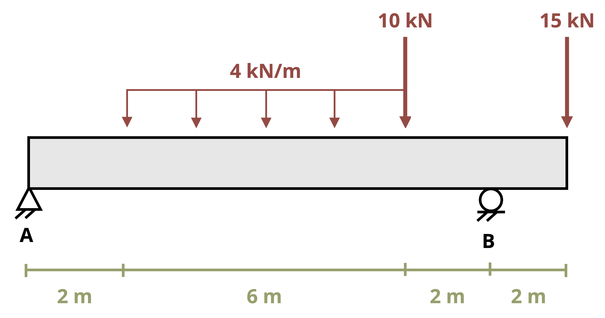
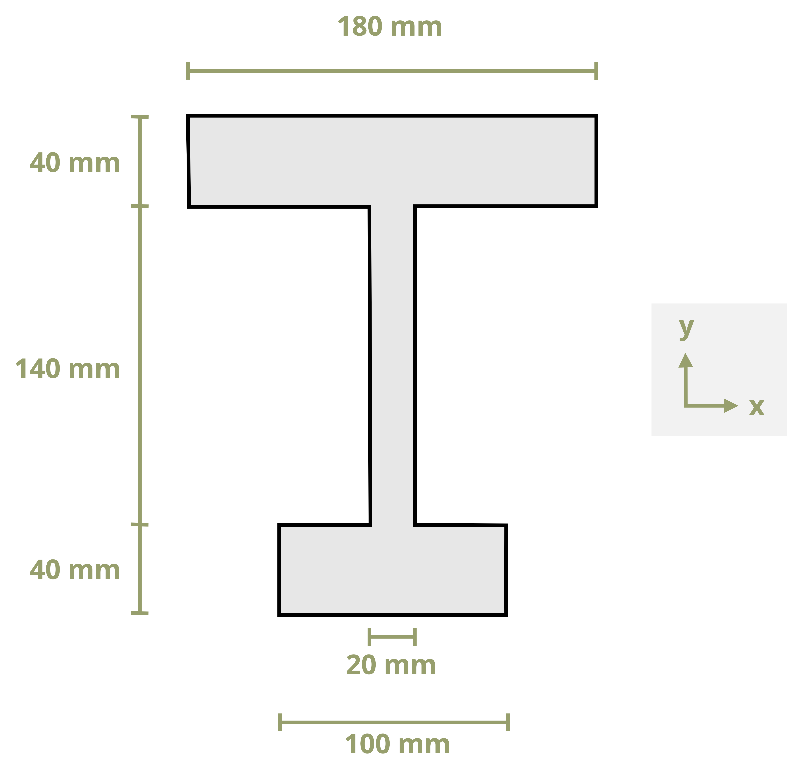
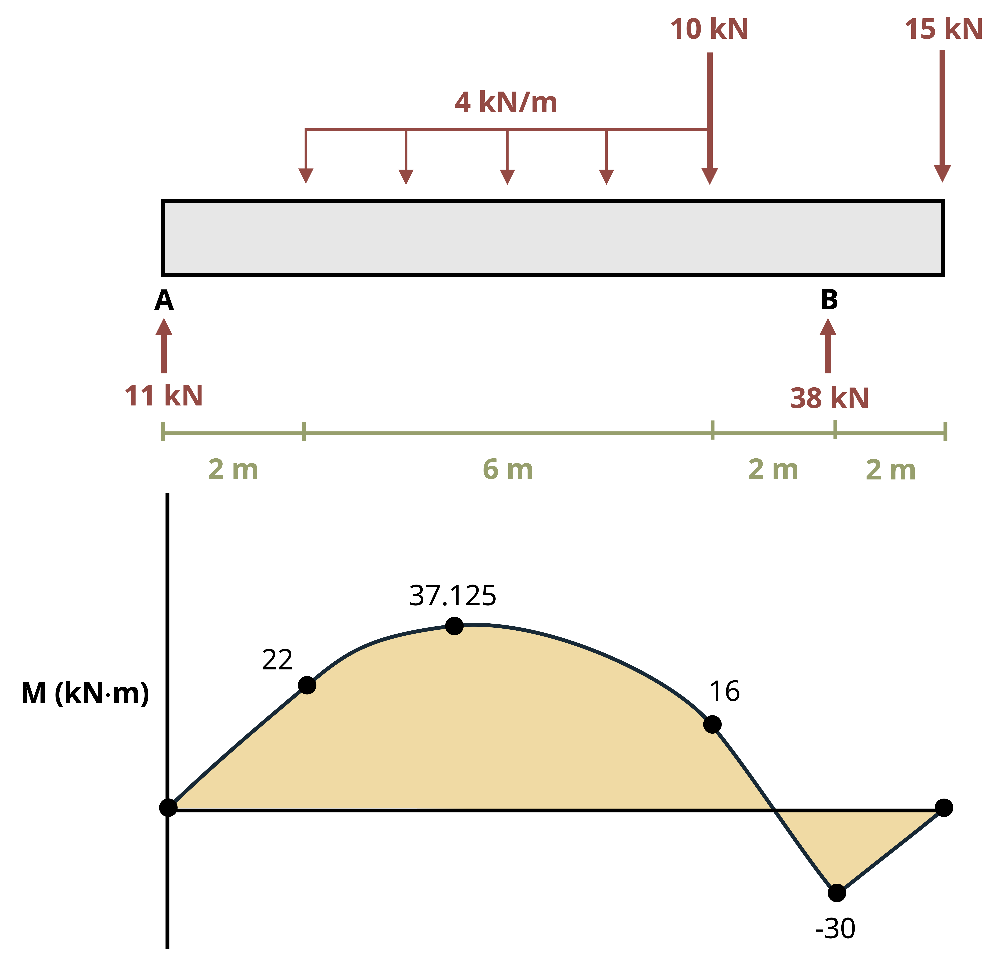

9 Bending Loads
Introduction
Click to expand
Beams are structural members that support loads along their length. Typically, these loads are perpendicular to the axis of the beam and cause only shear forces and bending moments.
Figure 9.1 Overarching book figure
As we found in previous chapters, internal forces and moments and section properties are crucial to calculating stresses and deflections. The same is true for finding stresses and deflections in beams. This chapter describes calculating bending stresses in beams, such as those in Figure 9.2, with considerations for unsymmetric bending and beam design.

In Section 9.1 we’ll derive an equation for calculating bending stress. In Section 9.2 we’ll discuss how to design beams to ensure they do not fail due to bending stress. In Section 9.3 we’ll extend our analysis to include cases where the bending moment acts not only about the horizontal axis of the beam, but has components about both the horizontal and vertical axes.
9.1 Bending Stress
Click to expand
This section will discuss bending behavior of straight, symmetric, homogeneous beams. This section will be limited to beams that have a cross section that is symmetric with an axis and the bending moment is around an axis that is perpendicular to the axis of symmetry. Examine the initially unaltered beam depicted in Figure 9.3, characterized by a rectangular cross-section, and annotated with both horizontal and vertical grid lines.

Upon the application of a bending moment, the tendency emerges to deform these lines, conforming to the pattern illustrated in Figure 9.4. Observe the curvature of the horizontal lines, and note that the vertical lines, while maintaining straightness, undergo a rotation. The application of a bending moment induces stretching in the material at the bottom section of the bar and compression in the material at the top section. As a result, within the transitional zone between these two regions, there exists a surface known as the neutral surface, where the horizontal fibers of the material experience no change in length (no compression or tension). When viewed on a cross-section, the neutral surface appears as a horizontal line known as the neutral axis.

We can make a similar observation when a kids toy undergoes bending as shown in Figure 9.5. This toy is subjected to a bending moment in the opposite direction of the beam in Figure 9.4, this will switch the behavior of the top and the bottom surfaces. Notice in Figure 9.5 the fibers at the top are pulled apart while the bottom surface fibers are pushed together.

We can take this knowledge about deformations due to bending and apply it to the failure of the column in Figure 9.6. Notice that the column was fixed at the base and was subjected to a transverse force that caused failure. The fibers on the right side of the column failure point were pulled apart while the fibers on the left side of the column failure point were compressed.

We will make the following assumptions about deformations due to bending:
There must be a neutral surface parallel to both the upper and lower surfaces, where the length remains constant.
Throughout the deformation, all cross sections of the beam remain plan and perpendicular to the longitudinal axis.
The cross section will keep it’s shape, we will ignore the Poisson effects discussed in sec-4.4 of this text.

To understand bending stress in a beam subjected to arbitrary loads, examine a small element extracted from the beam in Figure 9.7. The derivation of the bending strain equation remains unaffected by the beam type or specific loads. Remember the fundamental definition of normal strain:
\[ \varepsilon=\frac{\delta}{L} \]
We can use this to calculate the normal strain along AB in our beam.
\[ \varepsilon=\frac{\overline{A^{\prime} B^{\prime}}-\overline{A B}}{\overline{A B}} \]
Distance y is measured relative to the neutral surface and is positive above the neutral surface and negative below. Prior to bending, the line AB is the same length at all values of y. However, when bending occurs, the length of A’B’ varies. The length A’B’ experiences a reduction in length as the section moves farther above the neutral surface, and conversely, it undergoes an increasing extension below the neutral surface. By definition, the length of the neutral surface doesn’t change and remains the same as length AB. We can describe the lengths AB and A’B’ using the radius of curvature (ρ) and the differential angle (dθ) shown in Figure 9.7.
\[ \begin{gathered} \overline{A B}=\rho d \theta \\ \overline{A^{\prime} B^{\prime}}=(\rho-y) d \theta \end{gathered} \]
We can now substitute these lengths into our strain equation:
\[ \varepsilon=\frac{(\rho-y) d \theta-\rho d \theta}{\rho d \theta} \]
Simplifying
\[ \begin{gathered} \varepsilon=\frac{\rho d \theta-y d \theta-\rho d \theta}{\rho d \theta} \\ \varepsilon=\frac{-y d \theta}{\rho d \theta} \\ \varepsilon=-\frac{y}{\rho} \end{gathered} \]
This relationship shows us that the longitudinal strain, ε, varies lineraly with the distance, y, from the neutral surface. The maximum stress occurs at the outermost fibers, extreme top and bottom of the section. We call this maximum distance from the netrual surface, c. We can now write a relationship for the maximum absolute value of the strain, εm.
\[ \begin{gathered} \frac{\varepsilon}{\varepsilon_{\max }}=-\frac{y / \rho}{c / \rho} \\ \varepsilon=-\left(\frac{y}{c}\right) \varepsilon_{\max } \end{gathered} \]
Assuming that our material behaves in a linearly elastic manner, we can use Hooke’s Law, \(\sigma = E \epsilon\), to rewrite the strain relationship above into a relationship of stresses:
\[ \sigma=-\left(\frac{y}{c}\right) \sigma_{\max } \]
Therefore, similar to the variation in normal strain, normal stress, σ, will fluctuate from zero at the neutral surface to a maximum value, σmax, at a distance c from the neutral surface as shown in Figure 9.8.

To determine the position of the neutral surface, we necessitate the condition where the resultant force generated by the stress distribution across the cross-sectional area is equal to zero.
\[ 0=\int_A F_{resultant}=\int_A \sigma d A \]
We can now substitute our previous relationship between stress and distance from neutral axis.
\[ \begin{aligned} & 0=\int_A-\left(\frac{y}{c}\right) \sigma_{\max } d A \\ & 0=-\frac{\sigma_{\max }}{c} \int_A y d A \end{aligned} \]
Since \(-\frac{\sigma_{\max }}{c}\) does not equal zero we are left with:
\[ 0=\int_A y d A \]
This integral represents the first moment of area, as discussed in section 8.1. This equation indicates that the first moment of the cross-section about its neutral axis must be zero. Recall that the location of the centroid was determined by \(\bar{y}=\frac{\int_A y d A}{A}\). Consequently, for a member experiencing pure bending and as long as the stresses remain within the elastic range, the neutral axis traverses through the centroid of the section since \(\bar{y}\) (the distance from the neutral axis to the centroid) is zero.
We can ascertain the stress in the beam by setting the moment M equal to the moment produced by the stress distribution around the neutral axis.
\[ d M=y d F \]
Since
\[ d F=\sigma d A \]
We can write
\[ \begin{gathered} M=\int_A y d F=\int_A y(\sigma d A)=\int_A y\left(-\frac{y}{c} \sigma_{\max }\right) d A \\ M=\frac{\sigma_{\max }}{c} \int_A y^2 d A \end{gathered} \]
You might notice that the integral, \(\int_A y^2 d A\), represents the moment of inertia, or second moment of area, of the cross-sectional area about the neutral axis. We will denote the moment of inertia with I, as in sec-8.2.
Rearranging the previous equation to obtain the flexure formula:
\[ \boxed{\sigma_{\max }=\frac{M c}{I}} \tag{9.1}\]
σmax = Maximum bending stress in the beam, note that a complete description includes magnitude, units, tension, or compression [Pa, psi]
M = Internal bending moment calculated about the neutral axis of the cross section, determined from method of sections or shear and moment diagrams [N·m, lb·in.]
c = Perpendicular distance from the neutral axis to the point the farthest away from the neutral axis [m, in.]
I = Area moment of inertia about the neutral axis [m4, in.4]
We know from previous derivation that:
\[ \sigma=-\left(\frac{y}{c}\right) \sigma_{\max } \]
we can rearrange to provide the following relationship:
\[ \frac{\sigma_{\max }}{c}=-\frac{\sigma}{y} \]
We can determine a similar flexure formula to calculate the bending stress at any point along the cross section:
\[ \boxed{\sigma=-\frac{M y}{I}} \tag{9.2}\]
σ = Bending stress [Pa, psi]
M = Internal moment calculated about the neutral axis of the cross section [N·m, lb·in.]
y = Perpendicular distance from the neutral axis to the point of interest [m, in.]
I = Area moment of inertia about the neutral axis [m4, in.4]
Similar to sec-stress, when reporting normal stress you include if that stress is in tension or compression. During the derivation, we used a beam that was bending concave upwards. In sec-beams we indicated that this type of moment was considered positive. This leads to compression above the neutral axis and tension below. The inverse is true when the beam is subjected to negative bending moment as shown in Figure 9.9.

A beam with the shown cross section is subjected to a positive moment of 50 k-in. Calculate the normal stress at the top, bottom, and interface between flange and web.

We first start with the internal moment, this is a given in the problem statement to be +50k-in. Positive moment indicates that the beam is bending concave up, compression above the neutral axis and tension below.

We next need to determine the beam properties—centroid and moment of inertia. Since this is not a standard shape and the shape is not symmetric in the y direction, we will need to calculate this by hand. We cover this shape in detail in chapter 8.

| Shape | \(A {~(in.^2})\) | \(\bar{y}{~(in.})\) | \(A\bar{y}{~(in.^3})\) | \(I_x{~(in.^4})\) | \(d_y{~(in.})\) | \(I_x+Ad_y^2{~(in.^4})\) |
|---|---|---|---|---|---|---|
| 1 | 13.5 | 2.25 | 30.375 | 22.78125 | 1.5 | 53.15625 |
| 2 | 13.5 | 5.25 | 70.875 | 2.53125 | 1.5 | 32.90625 |
| \(\sum A\) = 27 | \(\sum A\bar{y}\) = 101.25 | \(\sum I_{x}\) = 86.0625 |
\[ \begin{aligned} \bar{Y}=\frac{101.25{~in.^3}}{27{~in.^2}} & =3.75{~in.}~~\text{from bottom} \\ & =2.25{~in.}~~\text{from top} \\ \end{aligned} \]
There are three parts to this problem that change the y value. We will start with calculating the stress at the top of the section, using the flexure formula:
\[ \sigma_{t o p}=-\frac{M y}{I} \]
Before we plug in our values, we need to ensure that the units are consistent.
\(M = 50{~kip}\cdot{in.}\)
\(y = 2.25{~in.}\)
\(I = 86.0625{~in.^4}\)
Since all units are in kips and inches, we are going to plug into our flexure formula:
\[ \sigma_{top}=-\frac{(50{~kip}\cdot{in.})(2.25{~in.})}{86.0625{~in.}^4}=-1.31{~ksi} \]
For a complete answer we need to include magnitude, units, and tension or compression. The magnitude is 1.31, the units will be kips/in2 or ksi. To determine the tension or compression we will look at the sign of the internal moment and where along the section we are calculating the bending stress. In our example the moment is positive, and we calculate the stress at the top of the section our answer will be in compression.

\[ \sigma_{top}=1.31{~ksi}~(C) \]
Note that, as long as we are careful to use the correct signs for M and y (both positive in this case), the answer will also come out with the correct sign (negative in this case which indicates compression).
We will now calculate the normal stress at the bottom of the beam. The only quantity that changes is the y value – we will now use the distance from the neutral axis to the bottom of the beam (3.75 in).
\[ \sigma_{btm}=-\frac{(50{~kip}\cdot{in.})(-3.75{~in.})}{86.0625{~in.}^4}=2.18{~ksi} \]
The moment is positive, so the beam bends concave up, anything below the neutral axis is in tension.
\[ \sigma_{btm}=2.18{~ksi}~(T) \]
This again works mathematically as long as we use the correct positive sign for the M and negative sign for y (since the point of interest is below the neutral axis). The answer comes out positive, indicating tension and matching our expectation.
Finally, we can calculate the normal stress at the junction of the flange and the web. We will need to find the distance from the neutral axis the flange web junction.


\[ \sigma_{F / w}=-\frac{(50{~kip}\cdot{in.})(0.75{~in.})}{86.0625{~in.}^4}=-0.436{~ksi} \]
Since the flange web junction is above the neutral axis and our beam is subjected to positive moment, our bending stress will be in compression.
\[ \sigma_{F/w}=0.436{~ksi}~(C) \]
Calculate the maximum tensile and maximum compressive bending stress in the beam shown below.


The first step is to find the internal forces in the beam so that we can find the maximum positive and negative moments. The best way to do this is to draw the moment diagram. We did this in detail in Example exm-7.3.

We can see that the maximum positive moment is 37.125 kN·m and the maximum negative moment is 30 kN·m.
We next need to determine the beam’s geometric properties—centroid and moment of inertia. Since this is not a standard shape and the shape is not symmetric in the y direction, we will need to calculate this by hand. We covered this shape in detail in Example 8.2.

Find centroid (\(\bar{x} = 0\) due to symmetry).
| Shape | \(A{~(mm}^2)\) | \(\bar{y}{~(mm})\) | \(A\bar{y}{~(mm^3})\) |
|---|---|---|---|
| 1 | 4,000 | 20 | 80,000 |
| 2 | 2,800 | 110 | 308,000 |
| 3 | 7,200 | 200 | 1,440,000 |
| \(\sum A\) = 14,000 | \(\sum A\bar{y}\) = 1,888,000 |
\(\bar{Y}=130.6{~mm}~~\text{from bottom}\)
| Shape | \(I_x{~(mm^4})\) | \(d_y{~(mm})\) | \(I_x+Ad_y^2{~(mm^4)}\) |
|---|---|---|---|
| 1 | 533,333 | 110.57 | 49,436,233 |
| 2 | 4,573,333 | 20.57 | 5,758,083 |
| 3 | 960,000 | 69.43 | 35,667,779 |
| Ix = 90,862,095 mm4 |
The positive bending moment will cause compression at the top of the cross-section and tension at the bottom. The negative bending moment will cause tension at the top and compression at the bottom. It’s not obvious by inspection which of these two tensile stresses will be larger, nor which of the two compressive stresses will be larger. We should calculate all four to compare.
Before we plug in our values, we need to ensure that the units are consistent so we will change everything to Newtons and meters.
Mpos = 37.125 kN·m = 37.125 x 103 N·m
Mneg = 30 kN·m = 30 x 103 N·m
ytop = 89.43 mm = 0.08943 m
ybtm = 130.57 mm = 0.13057 m
Ix = 90,862,095 mm4 = 90.862095 x 10-6 m4
We will start with calculating the stress at the top and bottom of the section due to the maximum positive moment, using the flexure formula:
\[ \sigma=-\frac{M y}{I} \]

\[ \sigma_{top/pos}=-\frac{\left(37.125 \times 10^3{~N}\cdot{m}\right)(0.0893 {~m})}{90.86 \times 10^{-6}{~m}^4}=-36.49{~MPa~(C)} \]
\[ \sigma_{btm/pos}=-\frac{\left(37.125\times10^3{~N}\cdot{m}\right)(-0.13057{~m})}{90.86 \times 10^{-6}{~m}^4}=53.35{~MPa}{~(T)} \]
Now we can do something similar for the maximum negative bending stress.

\[ \sigma_{top/neg}=-\frac{\left(-30 \times 10^3{~N}\cdot{m}\right)(0.0893{~m})}{90.86 \times 10^{-6}{~m}^4}=29.48{~MPa~(T)} \]
\[ \sigma_{btm/neg}=-\frac{\left(-30 \times 10^3 \mathrm{~N}\cdot{m}\right)(-0.13057{~m})}{90.86 \times 10^{-6}{~m}^4}=-43.11{~MPa}~{(C)} \]
The overall maximum tensile stress for this beam occurs at the bottom of the section due to positive moment, 53.35 MPa (T). The overall maximum compressive stress (43.11 MPa (C)) also occurs at the bottom of the section in a different part of the beam, but is due to the negative moment.
For many situations the overall largest stress would be sufficient. However, there are materials that behave differently depending on whether they are subjected to tensile or compressive stress. Concrete is a good example of this, as it is relatively strong against compressive stresses but very weak against tensile stresses. Steel rebar is placed inside concrete members to support the tensile stresses as shown in Figure 9.10. At this point in your engineering career it is good practice to report both the maximum tensile and compressive stresses at each critical point on the beam.
.jpg)
- Determine the internal moment at the point to which you want to calculate the bending stress. If you know the point along the length of the beam that you are investigating, then you can cut a section and apply equilibrium equations to determine this moment. If you need to find the maximum bending stress then draw the moment diagram to find the maximum internal moment. (Review of this is in sec-beams of this text).
- Determine the section properties of the beam. This will require knowing the location of the centroid, neutral axis, and the moment of inertia. (Review of this is in sec-geometric-properties of this text or a table listing values of I for selected common shapes is in the Appendix.)
- Identify the specific location on the section for which you are computing the normal stress, y (or c, if you are calculating the maximum normal stress.)
- Ensure that the units of M, I, and y (or c) are consistent then use one of the flexure formulas to calculate bending stress. Ensure that the result contains the magnitude, units, and tension or compression.
9.2 Beam Design for Bending
Click to expand
Frequently, beam design is governed by the bending moment. In this section, we will leverage our understanding of bending stress to design beams capable of withstanding their applied internal moments. We will design two common categories of beams. We’ll start with rolled steel beams of varying cross sections. You can find a sampling of these standard shapes in Appendix A of this text. We’ll then discuss rectangular cross-sections, which are common for timber beams.
A safe design requires that the allowable stress of the material used is greater than the stress due to the loading. When we design a structure, we need to know what the material properties are so that we can produce safe designs. In the flexure equation for maximum bending stress, \(\sigma_m=\frac{M_{\max } c}{I}\), there are four variables: σm, Mmax, c, and I. We will start with the allowable stress of the material, σall, and use the |Mmax| derived from the loading condition. What is left are section properties, I, and c. For standard shapes these are combined into one variable, section modulus (S):
\[ \boxed{S=\frac{I}{c}} \tag{9.3}\]
We can substitute this value into the flexure formula and rearrange for Smin—the minimum allowable value of the section modulus for the beam:
\[ \boxed{S_{min}=\frac{\left|M_{\max}\right|}{\sigma_{allow}}} \tag{9.4}\]
Smin = Minimum required section modulus for the beam to resist the bending stress [m3, in.3]
|Mmax| = Magintude of the maximum internal bending moment [N·m, lb·in.]
𝜎allow = Maximum allowable stress for the beam [Pa, psi]
9.2.1 Design of Standard Steel Sections
As long as we design our beam such that its section modulus is larger than Smin, the beam is guaranteed not to fail due to bending stress. Rolled steel beams tend to have relatively complex cross-sections with multiple dimensions that can be varied in order to alter its section modulus and therefore its resistance to bending stress. Designing each dimension individually would be time consuming and it would be costly to manufacture a unique beam for every loading condition. Instead, beams are mass produced in standard sizes and engineers simply select the most appropriate beam for their specific need. There will be many standard steel shapes that will satisfy this equation, meaning they will be safe. Engineering is determining which of the shapes that work you will use. Often there are many criteria that you will need to consider. In this section we will use cost to determine the shape. Steel beams are priced by their weight, the higher the weight the more expensive. To choose the most economical shape, we will choose the shape with the smallest weight (smallest cross-sectional area).
There are basic structural steel shapes that have standardized cross sectional dimensions. W shapes (standing for Wide Flange) are often used for beam design as they have an efficient cross section. Figure 9.11 is a sample of the beam table in the Appendix.
Figure 9.11: Portion of the W Section table from Appendix A
Each beam has a designation that gives us quick information about the section, see Figure 9.12.

Notice in the sample beam section table in Figure 9.11 they are all W shapes and grouped by approximate height (first number). Within each height grouping the shapes are arranged from lightest to heaviest (second number) when going from the bottom to top of the height grouping. For each standard shape in this table the cross-sectional area, depth (height), flange and web dimensions, moment of inertia in the x and y directions, section modulus, in the x and y direction, and the radius of gyration in the x and y directions (this is a geometric property related to buckling, we will use this in sec-columns of this text) are given.
In certain instances, the selection of a section might be constrained by factors such as the permissible depth of the cross-section or the allowable deflection of the beam. This discussion is limited to materials that behave the same in tension and compression. If this is not the case (such as when you use concrete), then you may need to check multiple points along the length of the beam. Additionally, if the section is not symmetric about the neutral axis, the maximum tensile and compressive stresses may not occur at the point where M is max or min. Lastly, this procedure only considers bending stresses. Although bending stresses do control the design of most beams, there are instances where shear or deflection will control. We will discuss this more in sec-beam-deflection in this text.
Knowing that the allowable normal stress for the steel used is 24 ksi, select the most economical wide-flange beam to support the loading shown.

The first step is to find the internal forces in the beam, we will start by calculating the reactions.

\[ \begin{aligned} \sum& F_x =A_x =0\\ \sum& M_A =-8{~kips}(5{~ft})+5{~kips}(11{~ft})-(3\frac{kips}{ft}*6{~ft})(17{~ft})+B_y(20{~ft})=0 \\ &B_y =14.55{~kips} \\ \sum& F_y=A_y-8{~kips}+5{~kips}-(3\frac{kips}{ft})*6{~ft})+14.55{~kips}=0 \\ &A_y=6.45{~kips} \end{aligned} \]
Now that we have the reactions, we can build the shear diagram. We will start on the left side and go up the reaction at support A, 6.45 kips. We will continue along the beam following the loads to finish the shear diagram.

To build the moment diagram we will calculate the area under the curve from the shear diagram using geometry. We will calculate the area of three rectangles and two triangles.
\[ \begin{aligned} & A_1=(6.45)(5)=32.25 \\ & A_2=(1.55)(6)=9.3 \\ & A_3=(3.45)(3)=10.35 \\ & \frac{18}{6}=\frac{3.45}{x} \quad\rightarrow\quad x=1.15{~ft,}~~~y=6-1.15=4.85 {~ft} \\ & A_4=\frac{1}{2}(1.15)(3.45)=1.98 \\ & A_5=\frac{1}{2}(4.85)(1455)=35.28 \\ & \end{aligned} \]
From the moment diagram we can see that |Mmax| = 35.28 kip*ft. We will use this value and σall = 24 ksi (given in the problem statement) to calculate the minimum section modulus needed, Smin.
\[ \begin{aligned} & S_{min}=\frac{|M_{max}|}{\sigma_{allow}} \\ & S_{min}=\frac{(35.28{~kip}\cdot{ft})(12\frac{in.}{ft})}{24{~ksi}} \\ & S_{min}=17.64{~in}^3 \end{aligned} \]
Now that we know the minimum section modulus needed for this beam, we will go to the standard beam table in Appendix A. Focusing on the Sx column, we will start at the bottom of the table and choose one shape from each height section that is applicable.
For our beam, the following sections will be adequate for bending:
W8 x 21
W10 x 19
W12 x 22
W14 x 22
We didn’t choose any from the W4, W5, and W6 groupings because none of these beams have a section modulus greater than 17.64 in3. We also didn’t continue with groupings greater than W14 because those sections are far larger than what we need as noted by the weight (second number in the designation).
Now we will choose the most economical beam by comparing the last number in the designation, as this represents the weight per foot of the beam. The most economical section for this material and loading is the W10 x 19. This beam weighs 19 lb/ft and is the lightest of the beams we identified.
- Establish the allowable stress, σall, value of sigma for the chosen material by referring to a table of material properties or consulting design specifications. Proceed with the following steps assuming that σall is the same for tension and compression.
- Determine the maximum absolute value of the bending moment |Mmax| in the beam by drawing the shear force and bending moment diagrams. (Review of this is in sec-beams of this text).
- Calculate the minimum allowable value of the section modulus using this equation: \(S_{min}=\frac{\left|M_{\max }\right|}{\sigma_{all}}\)
- For a rolled steel beam, refer to the relevant table in the Appendix. Among the accessible beam sections, focus solely on those with a section modulus surpassing the minimum value calculated in step 3, S ≥ Smin. Start at the bottom of the table and select one beam in each height section (if applicable). Then from this short list, choose the section with the smallest weight per unit length, as it represents the most economical option for which S ≥ Smin. It’s essential to note that this choice may not necessarily correspond to the section with the smallest S value.
9.2.2 Design of Rectangular Sections
Rectangular cross-sections are common for timber beams. There are only two dimensions that need to be specified, base and height. While there are standard rectangular cross-sections too (e.g., 2” x 4”) we’ll approach the design of rectangular cross-sections by assuming that one dimension scales with the other and so we only need to specify a single dimension. Rather than select from a list of standard cross-sections, we’ll specify this required dimension exactly.
We can calculate the minimum section modulus as before
\[ S_{min}=\frac{\left|M_{max}\right|}{\sigma_{allow}} \]
Now set this value
\[ S_{min}=\frac{I}{c} \]
For a rectangle
\[ \begin{gathered} I=\frac{b h^3}{12} \\ c=\frac{h}{2} \end{gathered} \]
So
\[ S_{min}=\frac{I}{c}=\frac{2 b h^3}{12 h}=\frac{b h^2}{6} \]
Problems will be set up such that there is a relationship between b and h, which leaves only one unknown that can be solved for directly. This will be the minimum acceptable size for this dimension—anything larger than the calculated value will not fail due to bending stress.
A simply supported timber beam spans a gap of 10 m. It is subjected to a uniform distributed load w = 15 kN/m as shown. The beam has a rectangular cross-section and will be manufactured such that the height is 2x the base. Determine the minimum acceptable dimensions for the cross-section of this beam if the maximum allowable bending stress of the timber is 12 MPa.

The allowable stress is given as σall = 12 MPa. Determine the magnitude of the maximum internal bending moment by drawing the shear force and bending moment diagrams. Since the loading is symmetric, the total applied load of 15 * 10 = 150 kN will be split evenly between the two supports. The reaction force at each support will be 75 kN.

The magnitude of the maximum internal bending moment |Mmax| = 187.5 kN·m
Now we can determine the required section modulus. Be careful with the order of magnitude of the bending moment and allowable stress.
\[ S_{min}=\frac{187.5\times10^3{~N}\cdot{m}}{12\times10^6\frac{N}{m^2}}=0.015625{~m}^3 \]
We can use this value to determine the required dimensions of the cross-section. Recall that h = 2b for this beam.
\[ \begin{gathered} S_{min}=0.015625{~m^3}=\frac{b h^2}{6}=\frac{b(2 b)^2}{6}=\frac{4 b^3}{6}=\frac{2}{3} b^3 \\ b^2=\frac{3}{2} * 0.015625{~m^3}=0.0234375{~m^3} \\ b=~^3\sqrt{0.0234375}=0.286{~m} \\ b=286{~mm} \\ h=2b=2 * 286=572{~mm} \end{gathered} \]
The minimum required dimensions to ensure this beam doesn’t fail due to bending stress are b = 286 mm and h = 572 mm.
For the purposes of this text, it is appropriate to give exact answers to 3 significant figures. In practice we wouldn’t generally specify the required dimension down to the mm since this is unnecessarily precise to manufacture. It is more practical to design to perhaps the nearest 10 mm, remembering to always round up. For example, we calculated the required dimension b = 153 mm. We must not round this down to 150 mm as this are below the required value, but rounding up to 160 mm would be acceptable. While not included in this problem, there would also be a factor of safety (sec-4.8) included in all designs in practice.
9.3 Unsymmetric Bending—Moment Arbitrarily Applied
Click to expand
Occasionally, a member may experience loading where the bending moment, M, does not align with one of the principal axes of the cross-section. In such cases, it is advisable to initially resolve the moment into components along the principal axes. Subsequently, the flexure formula can be applied to ascertain the normal stress induced by each moment component. Finally, by employing the principle of superposition, the resultant normal stress at the specific point can be determined.

To systematize this process, envision a beam with a rectangular cross-section subjected to a moment, M, as depicted in Figure 9.13(a). Here, M forms an angle, θ, with the maximum principal z-axis, which is the axis of maximum moment of inertia for the cross-section. It is assumed that θ is positive when directed from the positive z-axis towards the positive y-axis. We can resolve M into y and z components:
\[ \begin{aligned} & M_z=M \cos \theta \\ & M_y=M \sin \theta \end{aligned} \]
We can see in Figure 9.13 (b) the components of M acting on the rectangular cross section. It is important to keep track of which side of the beam is in compression and tension when subjected to both Mz and My. We will use tensile stress as positive and compressive stress as negative. When we look at a +Mz we can see that this moment causes the top of the section to be in compression and the bottom of the section to be in tension. When we inspect the section when subjected to +My, we can see that the left side will be in tension while the right side will be in compression. Combining what we know about the sign convention with the flexure formula we can calculate the resultant normal stress at any point on the cross section using the following equation:
\[ \boxed{\sigma=-\frac{M_z y}{I_z}+\frac{M_y z}{I_y}} \tag{9.5}\]
𝜎 = Bending stress at point of interest [Pa, psi]
Mz, My = Internal bending moment components about the z- and y-axes [N·m, lb·in.]
y, z = Distance in the y- and z-directions from the centroid to the point of interest [m, in.]
Iz, Iy = Area moment of inertia about the centroidal z- and y-axes [m4, in.4]
Note that for the signs to work correctly we must assign the appropriate sign to the y and z values and to the components of the bending moment. These values are measured from the coordinate system that originates at the centroid where the x axis is coming out of the page. You can also ignore all of the signs and use your spatial awareness to determine if each term is in tension or compression due to the applied moment.
Previously we identified the neutral axis—a line marking points of zero stress, When the bending moment acted around the horizontal axis, the neutral axis was also horizontal and passed through the centroid of the cross-section. When the bending moment acts at an angle (θ) from the horizontal axis, the neutral axis will still pass through the centroid but it will not be horizontal. It too will be at an angle (α). We can now determine the orientation of the neutral axis, as this will commonly not coincide with the axis of bending moment. We can derive the orientation of the neutral axis by setting the previous normal stress equation equal to zero:
\[ 0=-\frac{M_z y}{I_z}+\frac{M_y z}{I_y} \]
Now we can rearrange this to solve for y.
\[ y=\frac{M_y I_z}{M_z I_y} z \]
Now we can put this equation in terms of M by using \(M_z=M \cos \theta\) and \(M_y=M \sin \theta\) to obtain:
\[ y=\left(\frac{I_z}{I_y} \tan \theta\right) z \]
Since the slope of the line is \(\tan \alpha=y / z\) where the angle α represents the angle the neutral axis forms with the z axis, this can be written as:
\[ \boxed{tan(\alpha)=\left(\frac{I_z}{I_y}tan~\theta\right)} \tag{9.6}\]
𝛼 = Orientation of the neutral axis, measured from the z-axis [\(^\circ\)C, \(^\circ\)F]
𝜃 = Orientation of the internal bending moment, measured from the z-axis [\(^\circ\)C, \(^\circ\)F]
Iz, Iy = Area moment of inertia about the centroidal z- and y-axes [m4, in.4]
A bending moment M = 400 kip⸱in. is applied around an axis 65° above the negative z-axis as shown. Determine the bending stress at corners A, B, C, and D. Also determine the orientation of the neutral axis with respect to the z-axis.

We first determine the components of the bending moment around the y- and z-axes:
\[ \begin{aligned} & M_y=-400 \sin(65^{\circ})=-362.5{~kip}\cdot{in.} \\ & M_z=-400 \cos(65^{\circ})=-322.6{~kip}\cdot{in.} \end{aligned} \]
We’ll also need the area moment of inertia around both axes:
\[ \begin{gathered} I_y=\frac{8 * 15^3}{12}=2250{~in.}^4 \\ I_z=\frac{15 * 8^3}{12}=640{~in.}^4 \end{gathered} \]
Now we can calculate the stress at each corner using
\[ \sigma=-\frac{M_z y}{I_z}+\frac{M_y z}{I_y} \]
Pay close attention to the signs used for each term.
A:
\[ \sigma_A=-\frac{-322.6{~kip}\cdot{in.} *-4{~in.}}{640{~in.}^4}+\frac{-362.5{~kip}\cdot{in.} * 7.5{~in.}}{2250{~in.}^4}=-2.02{~ksi}-1.21{~ksi}=-3.23{~ksi}=3.23{~ksi}~(C) \]
B:
\[ \sigma_B=-\frac{-322.6{~kip}\cdot{in.} * 4{~in.}}{640{~in.}^4}+\frac{-362.5{~kip}\cdot{in.} * 7.5{~in.}}{2250{~in.}^4}=2.02{~ksi}-1.21{~ksi}=0.810{~ksi}=0.810{~ksi }~(T) \]
C:
\[ \sigma_C=-\frac{-322.6{~kip}\cdot{in.} * 4{~in.}}{640{~in.}^4}+\frac{-362.5{~kip}\cdot{in.} *-7.5{~in.}}{2250{~in.}^4}=2.02{~ksi}+1.21{~ksi}=3.23{~ksi}=3.23{~ksi}~(T) \]
D:
\[ \sigma_D=-\frac{-322.6{~kip}\cdot{in.} *-4{~in.}}{640{~in.^4}}+\frac{-362.5{~kip}\cdot{in.} *-7.5{~in.}}{2250{~in.}^4}=-2.02{~ksi}+1.21{~ksi}=-0.810{~ksi}=0.810{~ksi}~(C) \]
Note that due to the symmetry of the cross-section, the stresses at diagonally opposite corners have the same magnitude but opposite signs. This can be used to shorten the problem by only calculating the stresses at two corners (say A and B) and identifying the stresses at the opposite corners.

The orientation of the neutral axis is found from:
\[ \begin{gathered} \tan (\alpha)=\frac{I_z}{I_y} \tan (\theta) \\ \alpha=\tan ^{-1}\left(\frac{640{~in.}^4}{2250{~in.}^4} \tan \left(65^{\circ}\right)\right)=31.4^{\circ} \end{gathered} \]
A bending moment M = 25 kip⸱ft is applied to a W14 x 43 beam around an axis 40° above the positive z-axis as shown. Determine the maximum tensile bending stress in the section and the orientation of the neutral axis with respect to the z-axis.

The dimensions of the W14 x 43 beam can be found in Appendix A. We can also look up the area moment of inertia about both axes.

\[ \begin{gathered} I_y=45.2{~in}^4 \\ I_z=428{~in}^4 \end{gathered} \]
Next determine the components of the bending moment around the y- and z-axes. Since the bending moment is given in kip⸱ft and all of the dimensions are given in inches, we’ll convert the bending moment to kip⸱in at this stage.
\[ \begin{aligned} & M_y=25 \sin \left(40^{\circ}\right) * 12=193{~kip}\cdot{~in.} \\ & M_z=25 \cos \left(40^{\circ}\right) * 12=230{~kip}\cdot{~in.} \end{aligned} \]
The bending stress at any point can be calculated using:
\[ \sigma=-\frac{M_z y}{I_z}+\frac{M_y z}{I_y} \]
The maximum tensile bending stress will occur at the corner where both of these terms are positive. Since both Mz and My are positive, it should be apparent that the y-distance should be negative and the z-distance should be positive, so the maximum tensile bending stress will occur at the bottom left corner. At this point, \(y=-\frac{13.7{~in.}}{2}=-6.85{~in.}\) and \(z=\frac{8{~in.}}{2}=4{~in.}\).
\[ \sigma=-\frac{230{~kip}\cdot{in.} *-6.85{~in.}}{428{~in.}^4}+\frac{193{~kip}\cdot{in.} * 4{~in.}}{45.2{~in.}^4}=3.68{~ksi}+17.1{~ksi}=20.8{~ksi}~(T) \]

The orientation of the neutral axis is found from:
\[ \begin{gathered} \tan (\alpha)=\frac{I_z}{I_y} \tan (\theta) \\ \alpha=\tan ^{-1}\left(\frac{428{~in.}^4}{45.2{~in.}^4} \tan \left(40^{\circ}\right)\right)=82.8^{\circ} \end{gathered} \]
Determine the geometric properties of the cross-section, including centroid location and area moments of inertia (\(I_y~\text{and}~I_z\))
Determine the point of interest and the distances in the y- and z-directions from the centroid to this point (\(y~\text{and}~z\))
Determine the y- and z-components of the internal bending moment \(M_y~\text{and}~M_z\)
Calculate the bending stress at the point of interest from \(\sigma=-\frac{M_z y}{I_z}+\frac{M_y z}{I_y}\)